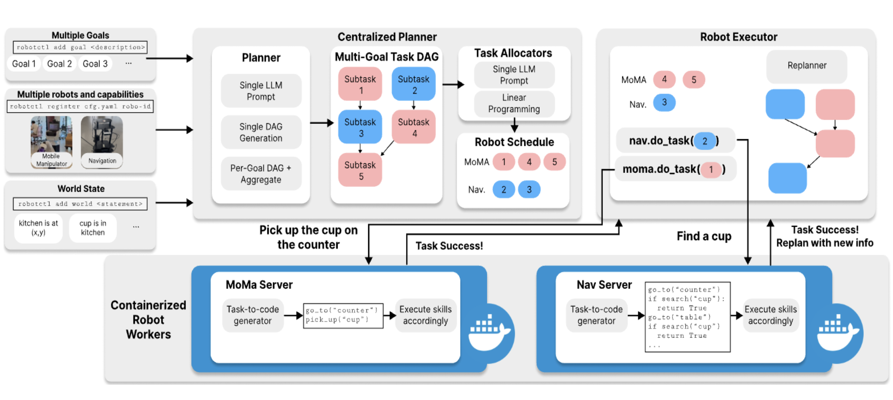

research |
|  |
RobotFleet: An Open-Source Framework for Centralized Multi-Robot Task Planning
Rohan Gupta*, Trevor Asbery*, Zain Merchant*, Abrar Anwar, Jesse Thomason RobotFleet is an open-source framework for centralized multi-robot task planning and scheduling, designed to coordinate heterogeneous fleets using modular components and LLM-based planning. Whether you're working with mobile manipulators, navigation robots, or custom agents, RobotFleet helps you scale multi-robot operations with ease. Preprint, 2025 code paper |

|
Efficient Evaluation of Multi-Task Robot Policies With Active Experiment Selection
Abrar Anwar, Rohan Gupta, Zain Merchant, Sayan Ghosh, Willie Neiswanger, Jesse Thomason Evaluating robot control policies across many tasks is time-consuming and costly. We propose framing this as an active testing problem, using natural language to model task similarities and guide efficient experiment selection. Our cost-aware framework reduces evaluation effort by prioritizing informative trials, supporting both continuous and discrete outcomes. Preprint, 2025 arxiv twitter |

|
Generating Contextually-Relevant Navigation Instructions for Blind and Low Vision People
Zain Merchant, Abrar Anwar, Emily Wang, Souti Chattopadhyay, Jesse Thomason Navigating unfamiliar environments presents significant challenges for blind and low-vision (BLV) individuals. We investigate how grounded instruction generation methods can provide contextually-relevant navigational guidance to BLV users. ROMAN 2024 Interactive AI Workshop (Best paper), 2024 paper |